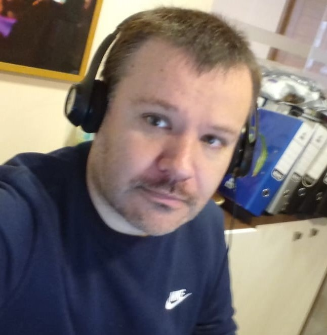

Esteban Llanos Vera
English-Japanese Translator
Professional curriculum
I stand out for my empathic character; which allows me a great capacity to
adapt, acquire responsibilities and the ability to work as a team. In
addition, I have the ability to carry out my work in a cordial atmosphere
of respect and harmony; facilitating decision-making and good relations
with all levels of the organization. I have extensive experience in trust
positions, problem solving and ability to work under pressure. High moral
values, enterprising, proactive. Responsible and committed to the work
entrusted.
Contact details
Date of Birth: January 16th, 1979
Nationality: Chilean
Contact: +569 87718040
Email address: esteban.llanosv@gmail.com
Main address: San Mauricio 3176, Puente Alto, Santiago, Chile
Social media: www.linkedin.com/in/esteban-llanos
Academic background
- Professional Title of English-Spanish Translator (2001 – USACH).
- Major in English – Spanish – Japanese Translation.
Career experience
SDL Chile S.A.
2017 – May 2022
Senior Translation Manager
-
Supervision of the operation of the local office as well as the
translation projects of the clients; emphasizing quality and stipulated
delivery times.
-
Assistance to the people in different positions to solve their problems
and meet the demands of customers.
-
Recruitment of new internal and external talent to increase both
internal and external capacity to deliver a better service to customers
and their needs.
-
Communication and implementation of new initiatives and/or technologies
within the office to adapt to changes within the organization based on
long-term strategies.
-
Coordination of all contractual and human resources aspects of local
employees, such as vacations, salary increases, work-related problems,
etc.
-
Development and implementation of quality measures to address customer
complaints and improve results and regain trust.
-
Provide different pieces of training to the different translation team
to transfer knowledge and help them excel in their job positions.
SDL Chile S.A.
2013 – 2017
Translation Line Manager
-
Job position related to the management of a translation team in charge
of different clients. The main tasks of this position consisted of
assigning translation projects according to the area of specialization
and the deadlines agreed with clients in order to deliver top quality.
-
I was also in charge of all the administrative side of the projects,
such as payments to vendors, the creation of instruction guides, and
solving any issue that may arise during the life cycle of a project.
-
In addition to administrative tasks, part of my day was focused on
production. That is to say, translating and editing different texts for
the numerous clients that we managed as a team. Among these clients are:
Google, Dell-EMC, Marsh, HSBC, Intel, Motorola, Starbucks, Sony, Disney,
Ovations, Molina Healthcare, WellCare, etc. 5 years of experiencing
translating for these clients.
-
Provide pieces of training to the team to transfer knowledge and help
them grow in their careers within the company.
Lionbridge Chile Traducciones
2003 – 2013
Project Manager
-
Assignment, coordination and supervision of translation projects for different clients; emphasizing quality and stipulated delivery times.
-
Coordination of external vendors.
-
Personalized attention to a portfolio of direct clients, those who require more direct attention due to their demands.
Lionbridge Chile Traducciones
2002 – 2003
Spanish-English Freelance Translator
-
Technical translations for several clients (such as Lowe's, LRN, Ovations, Samsung, EMC, etc.) in the translations of different projects and topics.
-
Deployment of various translation tools to achieve an excellent final product.
-
Integration of other skills related to translation tasks to improve the final product.
Additional skills
- Microsoft Office – Medium to advanced knowledge.
- Efficient, accurate and detail-oriented.
-
Translation management software skills (Trados Studio –
Translation Workspace – Trados – SDLX – Wordfast
– Passolo – TMX – Xbench – Transistor).
-
Ability to find solutions to problems creatively, proactively, and to
work under pressure.
-
Ability to work in teams and to work independently, with little or no
supervision.
- Strong written and oral communication skills.
Interests
-
Technology, music, videogames, movies/TV shows, social meetings,
science, and languages.
References